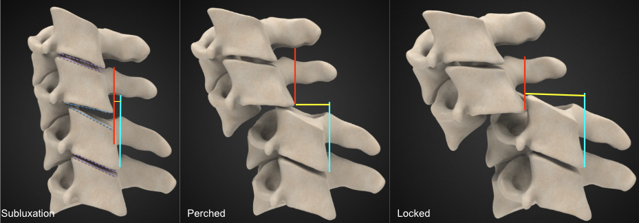
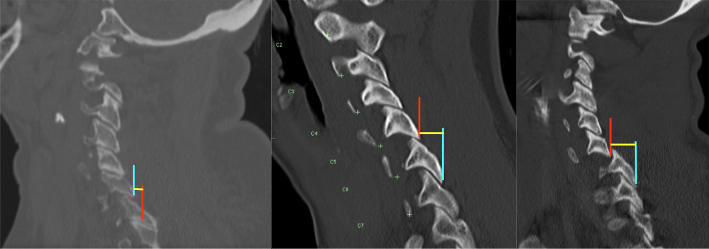

Adapted from: Jones J, Baba Y, Bell D, et al. Facet dislocation. Reference article, Radiopaedia.org (Accessed on 20 Dec 2025) https://doi.org/10.53347/rID-9092
1) Description of Measurement
Facet joint step-off quantifies the anteroposterior displacement between articulating cervical facet joints and is used to identify facet subluxation, perched facets, and locked (jumped) facets, which represent progressively severe forms of posterior element instability.
This measurement assesses the degree of malalignment between the inferior articular facet of the superior vertebra and the superior articular facet of the inferior vertebra. Increasing step-off distance reflects escalating mechanical instability and is strongly associated with disco-ligamentous injury, neurologic risk, and the need for surgical stabilization.
2) Instructions to Measure
3) Normal vs. Pathologic Ranges
Key points:
4) Important References
Allen BL Jr, Ferguson RL, Lehmann TR, O'Brien RP. A mechanistic classification of closed, indirect fractures and dislocations of the lower cervical spine. Spine (Phila Pa 1976). 1982 Jan-Feb;7(1):1-27. doi: 10.1097/00007632-198200710-00001.
Harris JH Jr, Mirvis SE. The Radiology of Acute Cervical Spine Trauma. 3rd ed. Williams & Wilkins; 1996.
Dvorak MF, Fisher CG, Fehlings MG, et al. The surgical approach to subaxial cervical spine injuries: an evidence-based algorithm based on the SLIC classification system. Spine (Phila Pa 1976). 2007 Nov 1;32(23):2620-9. doi: 10.1097/BRS.0b013e318158ce16.
Daffner RH, Sciulli RL, Rodriguez A, Protetch J. Imaging for evaluation of suspected cervical spine trauma: a 2-year analysis. Injury. 2006 Jul;37(7):652-8. doi: 10.1016/j.injury.2006.01.018.
5) Other info....
Facet step-off is a direct measure of mechanical instability, complementing:
CT is the gold standard for detecting facet displacement and fractures.
MRI is recommended when step-off is identified to evaluate:
Unilateral locked facets are commonly associated with rotational injuries.
Bilateral locked facets often result in significant canal compromise and neurologic injury.
Even small step-off distances may be clinically significant in the presence of neurologic symptoms or associated ligamentous disruption.